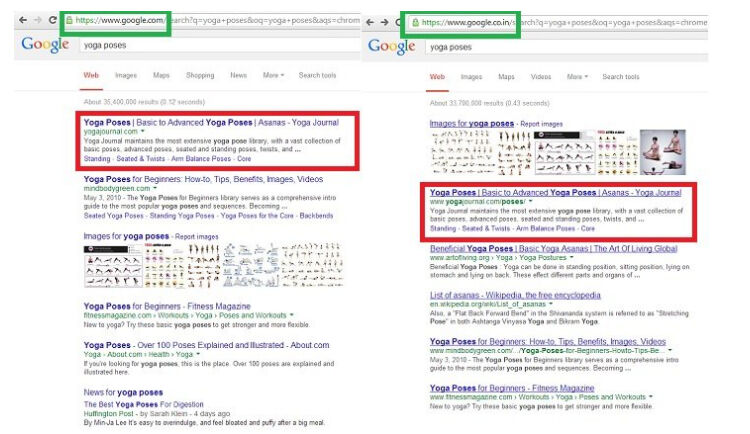
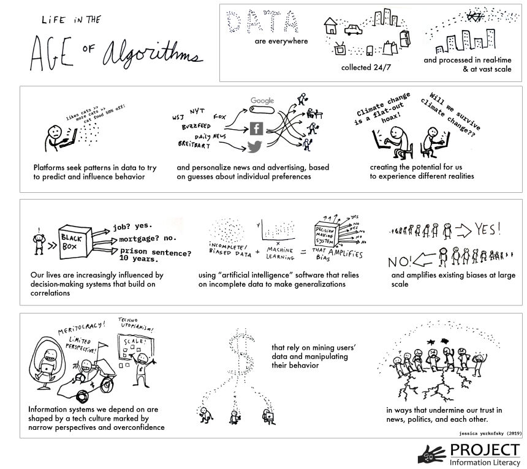
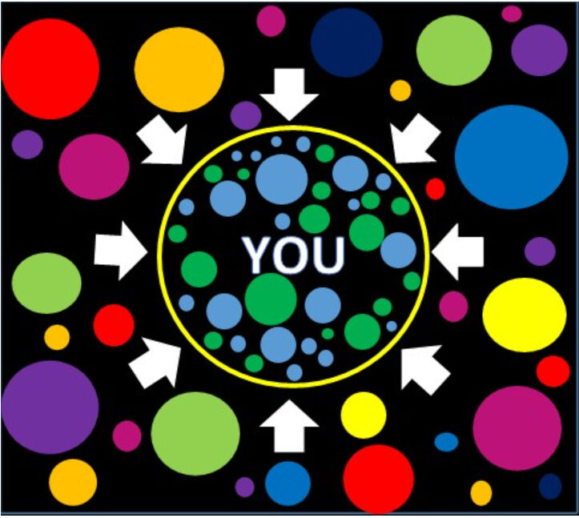
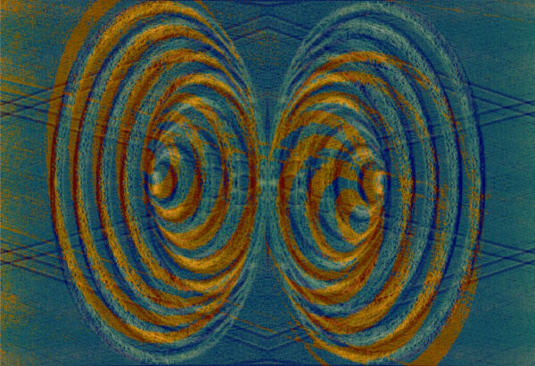

Trainees Edition
Trainers Edition
Trainees Edition
Trainers Edition
MODUL 6: DOBA ALGORITMOV
Opis modula
Glavni namen tega modula je ozaveščanje o algoritmih, njihovem delovanju in vplivu na ljudi in družbo ter o prednostih in posledicah avtomatiziranega odločanja.
The secondary aim is to guide trainers who want to use the content of this Module to train their trainees.
With these aims in this module, how algorithms work, their possible impact on people, societies and daily life, why they need to be approached and used by caution along with guidelines about how to teach the subject are covered.
Sekundarni namen je usmerjati izvajalce usposabljanja, ki želijo vsebino tega modula uporabiti pri usposabljanju svojih udeležencev.
S temi cilji je v tem modulu zajeto, kako algoritmi delujejo, kakšen je njihov morebitni vpliv na ljudi, družbe in vsakdanje življenje, zakaj je treba k njim pristopiti in jih uporabljati previdno, skupaj s smernicami o tem, kako poučevati to temo.
Udeleženci, ki bodo uspešno zaključili ta modul, bodo znali:
- pokazati razumevanje, kaj so algoritmi in kako delujejo
- razumeti, kako algoritmi vplivajo na ljudi in družbe
- pokazati razumevanje prednosti in slabosti algoritmov
- pokazati razumevanje povezave med algoritmi, novicami in informativnimi viri
- pokazati razumevanje filtrirnih mehurčkov in odmevnih komor
Poleg tega bodo izvajalci usposabljanj, ki bodo uspešno zaključili ta modul, lahko pokazali razumevanje smernic za usposabljanje na to temo.
Additionally, trainers who successfully complete this module, will be able to demonstrate an understanding of the guidelines for training on the subject.
Struktura modula
Ta modul je sestavljen iz naslednjih delov:
- Opis modula (cilji, opis vsebine in učni rezultati)
- Struktura modula
- Smernice za udeležence
- Guidelines for Trainers (how to get prepared, methods to use and tips for trainers)
- Smernice za izvajalce usposabljanja (kako se pripraviti, metode za uporabo in nasveti za izvajalce usposabljanja)
- Vsebina (študijsko gradivo in vaje)
- Kviz
- Viri (reference in priporočeni viri ter videoposnetki)
Glavni cilji modula, opis vsebine in učni rezultati so pojasnjeni v delu Opis modula. Vsebina vključuje vsa študijska gradiva in vaje, povezane z vsebino. Kviz vključuje vprašanja z več izbirami, s katerimi lahko udeleženci usposabljanja preverijo svoj napredek. Gradiva imajo dve komponenti: reference in priporočena gradiva za nadaljnji študij. Reference so seznam virov, navedenih v vsebinskem delu. Priporočeni viri so sestavljeni iz seznama dodatnih virov in videoposnetkov, ki jih je zelo priporočljivo prebrati in pogledati za nadaljnje učenje o temi. Smernice za udeležence izobraževanja vključujejo navodila in predloge za udeležence izobraževanja. Smernice za izvajalce usposabljanja vodijo izvajalce usposabljanja skozi različne faze usposabljanja in vsebujejo nasvete, ki bi lahko bili koristni pri poučevanju teme.
Smernice za udeležence usposabljanja
Od udeležencev izobraževanja se pričakuje, da bodo prebrali besedilo, si ogledali priporočene videoposnetke in izvedli vaje. Za dodatne informacije lahko poiščejo predlagane vire. Po končanem študiju vsebine učencem priporočamo, da opravijo kviz za oceno svojega napredka. Po potrebi lahko ponovno pregledajo študijsko gradivo.
Guidelines for Trainers
Guidelines for trainers includes suggestions and tips for trainers about how to use the content of this Module to train people on the algorithms, the potential they have to affect people, their decisions and societies.
Getting Prepared
Preparing a presentation (PowerPoint/Prezi/Canva) which is supported with some visual materials which displays the results of search engine searches by different people or from different locations is strongly suggested. Alternatively a real time demonstration can be planned.
Getting Started
A short Kviz (3 to 5 questions) in Kahoot or questions with Mentimeter can be used at the beginning for engaging participants in the topic. It can be used as a motivation tool as well as a tool to check trainees’ existing knowledge about the subject.
Methods to Use
Various teaching methods can be used in combination during the training. Such as:
- Lecturing
- Discussion
- Group work
- Self reflection
Tips for Trainers
Warming-up
An effective way of involving participants and setting common expectations about what they will learn is to ask a few preliminary questions on the subject. This can be done through group work by asking trainees to discuss and collect ideas, but also individually by asking each participant to write their ideas on sticky notes.
The activity can be conducted as follows:
- Ask trainees what they think about the place of algorithms in their daily life
- Ask trainees to classify the given examples and make a list of places/circumstances decisions are taken by algorithm
- Ask trainees whether algorithms have anything to do with the news we are exposed
- Ask trainees who writes this algorithms and sets the decision making rules/parametresAfter the discussions, making sure that trainees are able to understand algorithms are everywhere in our daily lives and they are written by other people and have a potential for manipulation.
Presenting the Objective of the Lesson
The objective of the lesson should be made clear (which is to raise awareness about algorithms, their place in daily life and their potential for manipulation). Following the warming-up question it will be easier to clarify the objectives.
Presenting the Lesson Content
While presenting the content make sure to interact with the trainees and encourage them for active participation.
- Before providing a definition of algorithm, ask participants to define it elaborate on its functions.
- Before providing an overview of the benefits and potential risks of algorithms, ask participants to elaborate on it.
- When talking about the differing results for the same search (by different people or location) from search engines, either support your claim with screen shuts or make a real time demonstration
- If time and facilities allow, ask participants to perform the same search and compare results.
- Make the connection between algorithms and news/news feeds clear
- After completing a comprehensive overview of the algorithms, filter bubbles and echo chambers, ask participants to elaborate on the role algorithms play in the spread of misinformation.
Concluding
Make a short summary of the lesson and ask a couple of questions which underline the most important messages you planned to give.
- Ask trainees whether being aware of the algorithms helps them to take control.
After the discussions make sure that trainees understand that algorithms are making decisions for us and there is a room for manipulation.
Vsebina: Doba algoritmov
Uvod
Algoritem je skupek navodil in pravil, ki jih računalniki uporabljajo za reševanje problema ali izvajanje naloge (Head, Fister in MacMillan, 2020, str. 49). Algoritem lahko razumemo kot mini navodila, ki računalnikom povedo, kako naj opravijo določeno nalogo ali obdelujejo dane podatke (What is an algorithm?, n.d.)
Algoritmi skrbijo za vsebino s prednostnim razvrščanjem, klasifikacijo, asociiranjem in filtriranjem informacij. Prednostno razvrščanje vsebine omogoča, da se pozornost nameni eni stvari na račun druge. Klasifikacija vključuje razvrstitev določene entitete kot sestavine določenega razreda z upoštevanjem poljubnega števila značilnosti te entitete. Asociacija označuje odnose med entitetami. Filtriranje pa vključuje vključitev ali izključitev določenih informacij na podlagi niza meril (Diakopoulos, 2013, str. 4-8).
Algoritmi za filtriranje pogosto upoštevajo odločitve o prednostnem razvrščanju, klasifikaciji in asociaciji. Na primer, v aplikacijah za personalizacijo novic se novice filtrirajo glede na to, kako so bile te novice razvrščene, kako so bile povezane z interesi osebe in kako so bile prednostno razvrščene za to osebo. Na podlagi odločitev o filtriranju so nekatere informacije preveč poudarjene, druge pa cenzurirane (Diakopoulos, 2013, str. 4-8).
"Doba algoritmov" je močno vplivala na družbo, politiko in novice. Algoritmi so močni, učinkoviti in pogosto vprašljivi dejavniki inovacij in družbenih sprememb (Head, Fister in MacMillan, 2020, str. 4). Danes so vse bolj izpopolnjeni algoritmi zasnovani tako, da pomagajo in včasih popolnoma nadomestijo človekovo posredovanje pri nalogah odločanja. Zdi se, da vse to opravijo z nižjimi stroški in večjo učinkovitostjo kot človeški napori (O'Neil, 2016). Potencialne koristi avtomatiziranega odločanja so neštete in jasne, hkrati pa obstajajo tudi nekatera tveganja in pomisleki (Olhede & Wolfe, 2019, str. 2).
Obsežna razpoložljivost podatkov skupaj s hitrim tehnološkim napredkom na področju algoritmov izrazito spreminja družbo (Olhede & Wolfe, 2019, str. 2). V vsakdanjem življenju se algoritmi pogosto uporabljajo za vplivanje na odločitve o tem, kaj ljudje gledajo, kaj kupujejo (Head, Fister in MacMillan, 2020, str. 5), in celo, kako volijo (Epstein & Robertson, 2015). Algoritmi filtrirajo rezultate iskanja v brskalnikih. Lahko so programirani za odločanje o tem, kdo bo povabljen na razgovor za službo in na koncu, kdo bo dobil ponudbo za delo. Uporabljajo se lahko za upravljanje socialnih storitev, kot sta socialno varstvo in javna varnost. Lahko priporočajo, kateri prosilci za posojilo so dobro kreditno tveganje. Te nevidne črte kode lahko postavljajo medicinske diagnoze in lahko celo določijo dolžino prestajanja kazni (Head, Fister in MacMillan, 2020, str. 4-5).
Algoritmi sprejemajo vplivne odločitve, ki teoretično lahko ter v praksi dejansko tudi povečajo moč podjetij in vlad (Diakopoulos, 2013, str. 29). Pri sprejemanju odločitev lahko algoritmi spodbujajo politično, gospodarsko, geografsko, rasno ali drugo diskriminacijo, na primer pri zdravstveni oskrbi, ocenjevanju kreditov in trgovanju z vrednostnimi papirji (Pasquale, 2011). Algoritmi imajo moč, da oblikujejo izkušnje uporabnikov in celo njihovo dojemanje sveta (Diakopoulos, 2013, str. 3). Kljub dejstvu, da lahko njihovo delovanje včasih povzroči nepravičnost in da lahko oblikujejo predstavo ljudi ter vplivajo na njihove odločitve, se ljudje pogosto ne zavedajo njihove prisotnosti, saj so nevidni.
Algoritmična moč ni nujno škodljiva za ljudi, temveč lahko deluje tudi kot pozitivna sila (Diakopoulos, 2013, str. 2). Algoritmi po svoji naravi namreč niso ne dobri ne slabi. Njihovi učinki so prej odvisni od tega, za kaj so programirani, kdo izvaja programiranje, kako algoritmi delujejo v praksi, kako uporabniki komunicirajo z njimi in kaj se naredi z ogromno količino osebnih podatkov, s katerimi se hranijo (Head, Fister in MacMillan, 2020, str. 4). Vendar se je treba zavedati, da delujejo s pristranskostjo in da lahko delajo napake. Težava je pomanjkanje jasnosti glede tega, kako algoritmi izvajajo svojo moč nad ljudmi. Algoritmične kode so nepregledne (netransparentne) in skrite za plastmi tehnične zapletenosti (Diakopoulos, 2013, str. 2).
Njihovi učinki so pomembni (Barocas, Hood in Ziewitz, 2013; Hamilton, Karahalios, Sandvig in Eslami, 2014; Sandvig, Hamilton, Karahalios in Langbort, 2014). Iskalni algoritmi na primer strukturirajo spletne informacije, ki so na voljo družbi, in lahko delujejo kot vratar (Granka, 2010, str. 364-365; Introna in Nissenbaum, 2000). Rezultati iskanja, ki jih spletni brskalnik zagotavlja svojim uporabnikom, imajo velik vpliv na to, kako vsak uporabnik gleda na splet (Xing, Meng, Doozan, Feamster, Lee in Snoeren, 2014). Raziskovalci so preizkusili učinek prilagojenih rezultatov iskanja na Googlu in ugotovili, da se rezultati razlikujejo glede na več dejavnikov, kot so spletna vsebina v danem trenutku, regija, iz katere se izvaja iskanje, nedavna zgodovina iskanja in koliko manipulacije iskalnika je bilo izvedene za favoriziranje določenega rezultata (Xing , Meng, Doozan, Feamster, Lee & Snoeren, 2014).

Vir: Gohel, 2013
Raziskave so pokazale, da imajo uvrstitve rezultatov iskanja, ki jih zagotavljajo podjetja, ki se ukvarjajo z brskalniki, velik vpliv na stališča, preference in vedenje potrošnikov. Uvrstitve spletnih iskalnikov pomembno vplivajo na odločitve potrošnikov, predvsem zato, ker uporabniki bolj zaupajo in izbirajo višje uvrščene rezultate kot nižje uvrščene. Zaradi očitne moči iskalnih lestvic so raziskovalci proučevali, ali bi jih bilo mogoče manipulirati, da bi spremenili preference neodločenih volivcev na demokratičnih volitvah. Ugotovitve kažejo, da lahko pristranske iskalne lestvice spremenijo volilne preference neodločenih volivcev za 20 % ali več, pri nekaterih demografskih skupinah je lahko ta sprememba veliko večja, takšne lestvice pa je mogoče prikriti, tako da se ljudje manipulacije ne zavedajo (Epstein in Robertson, 2015).
Splošno razširjeno je napačno prepričanje, da so algoritmi (kot matematični modeli) in njihovi rezultati pošteni, objektivni in nepristranski (O'Neil, 2016). Ker algoritme obdelujejo računalniki in sledijo logičnim navodilom, ljudje pogosto mislijo, da so nevtralni ali brez vrednot, vendar lahko odločitve, ki jih sprejmejo ljudje pri oblikovanju in prilagajanju algoritma, ter podatki, na katerih se algoritem usposablja, vnašajo človeške pristranskosti, ki se lahko pri velikem obsegu še povečajo (Head, Fister in MacMillan, 2020, str. 49). Algoritmi prav tako uporabljajo slabe približke za povzemanje človeškega vedenja in izpisovanje rezultatov. Uporaba slabih približkov za merjenje in povzemanje realnosti je lahko pogosto diskriminatorne narave. Algoritmi sprejemajo odločitve, ne da bi jim bilo treba pojasniti, kako so do njih prišli (O'Neil, 2016). Nasprotno pa v primeru človeškega odločevalca obstaja povratna zanka, ki omogoča popravljanje napak v presoji (O'Neil, 2016). Poleg tega algoritmi, ki jih družbena spletišča uporabljajo za promocijo vsebin, ne ocenjujejo veljavnosti vsebin, zaradi česar se lahko širijo in so se širile napačne informacije (Jolly, 2014).
Kot zaključek lahko rečemo, da bodo algoritmi ostali, vendar jih je treba uporabljati previdno (O'Neil, 2016).
Življenje v dobi algoritmov: širša slika
Svet informacij se je v zadnjem desetletju nepričakovano spremenil – te spremembe je mogoče deloma pojasniti z vplivom algoritmov. Nekateri dejavniki, ki so gonilo teh sprememb, nam pomagajo videti širšo sliko, ki jo Head, Fister in MacMillan (2020, str. 5-7) povzemajo na naslednji način:
- Zbiranje podatkov o našem vsakdanjem življenju poteka nevidno in nenehno.
- Napredek v znanosti o podatkih omogoča sistemom zbiranje in obdelavo podatkov v realnem času, hitro in v velikem obsegu ("veliki podatki").
- Podatki, zbrani iz številnih virov, se hitro povezujejo.
- Avtomatizirani sistemi odločanja se uporabljajo v družbenih institucijah in procesih, ki določajo stvari, kot so: kdo dobi službo, hipoteko ali posojilo, dostop do socialnih storitev, sprejem v šolo ali izobraževalne storitve.
- Strojno učenje in umetna inteligenca, ki se vse pogosteje uporabljata v programskih izdelkih, ki sprejemajo zelo pomembne odločitve, se pogosto opirata na pristranske ali nepopolne nabore podatkov.
- Zaradi razdrobljenosti objavljenih informacij in njihove porazdelitve prek iskalnih platform in platform družbenih medijev je ocenjevanje nekoč ločenih virov (npr. znanstvenih člankov, časopisnih zgodb) težje.
- Profitne panoge zbirajo podatke o interakciji ljudi z računalniki za personalizacijo rezultatov, napovedovanje in usmerjanje vedenja, ciljno oglaševanje, politično prepričevanje in družbeno vedenje v velikem obsegu.
- Zdi se, da imajo te panoge težave s predvidevanjem ali odzivanjem na nenamerne posledice.
- Razmah platform družbenih medijev, ki nimajo etičnega kodeksa, prispeva k nezaupanju v uveljavljene tradicije znanja, kot sta novinarstvo in štipendiranje.
- Tehnična infrastruktura, ki vpliva na to, kako ljudje pridobivajo informacije ter oblikuje njihovo znanje in prepričanja, je po svoji zasnovi javnosti večinoma nevidna.
- Javnost premalo ve, kdo ima moč nad informacijskimi sistemi in njihovimi algoritmi ter kako se ta moč uporablja.
Zato je razumevanje delovanja informacij v dobi algoritmov za posameznike izjemnega pomena (Head, Fister in MacMillan, 2020, str. 7-8).

Vir: Head, Fister & MacMillan, 2020, p. 6.
Novice, informativni tokovi in algoritmi
Algoritmi se med drugim pogosto uporabljajo tudi za filtriranje novic o svetu. Danes bralci novice vse pogosteje odkrivajo prek družbenih medijev, e-pošte in aplikacij za branje, zato se promet na domačih straneh novičarskih spletnih mest še naprej zmanjšuje. Založniki se tega dobro zavedajo, zato so ustrezno prilagodili svojo infrastrukturo in zgradili algoritme, ki spreminjajo izkušnjo spletnega mesta glede na to, od kod bralec vstopi. Posledično ljudje zelo verjetno vidijo različne prve strani časopisov na spletu, saj so prilagojene posameznikom. Čeprav založniki menijo, da je optimizacija spletnih mest za bralne in delitvene preference določenih spletnih občinstev dobra stvar, saj tako uporabniki hitro in učinkovito pridejo do vsebine, ki jih bo verjetno zanimala, pa tovrstna oskrba morda ni dobra za bralce (Jolly, 2014).
Kanali novic, ki uporabnikom zagotavljajo pogosto posodobljene novice, so še ena aplikacija, pri kateri imajo algoritmi vplivno vlogo. Na primer Facebook novičarski kanal prikazuje algoritmično izbran ali filtriran seznam zgodb, izbranih iz nabora vseh zgodb, ki jih je ustvarilo omrežje prijateljev (Eslami, Rickman, Vaccaro, Aleyasen, Vuong, Karahalios, Hamilton in Sandvig, 2015, str. 153). Raziskava, opravljena med uporabniki Facebooka, s katero so preverjali njihovo dojemanje algoritma za izbiro novic na Facebooku, je pokazala, da se več kot polovica udeležencev (62,5 %) sploh ni zavedala obstoja algoritma za izbiro novic na Facebooku. Menili so, da se je v njihovem novičarskem kanalu pojavila vsaka posamezna zgodba njihovih prijateljev in strani, ki jim sledijo (Eslami, Rickman, Vaccaro, Aleyasen, Vuong, Karahalios, Hamilton in Sandvig, 2015, str. 153).
Algoritmi ljudem ne olajšajo le iskanja vsebine, ki jih zanima, temveč tudi iskanja vsebine, za katero algoritem meni, da jih zanima. Diakopoulos (2013, str. 2) trdi, da so danes algoritmi, ki jih poganjajo ogromne količine podatkov, novi nosilci moči v družbi.
Filtrirni mehurčki
Filtrirni mehurček je intelektualna izolacija, do katere pride zaradi personalizacije, ki omogoča izogibanje izpostavljenosti informacijam, ki so v nasprotju s predhodnim znanjem in mnenji. Nastane kot rezultat obdelave informacij, povezanih z uporabnikom (kot so zgodovina brskanja in iskanja, lokacija ter kanali družbenih medijev). Družbeni mediji lahko z algoritmi, ki jih uporabljajo, uporabnike zlahka zaprejo v filtrirne mehurčke. Medtem ko filtrirni mehurčki obkrožajo uporabnike s podobno mislečimi ljudmi, ki širijo informacije, skladne z njihovimi obstoječimi prepričanji in mnenji, lahko povzročijo manj stikov z ljudmi, ki imajo nasprotujoča si stališča. Prilagojeni rezultati iskanja pri Googlu in prilagojeni tokovi novic pri Facebooku sta dva primera, ki potrjujeta ta pojav (Filter bubble, 2018; Cooke, 2018).
Po besedah Pariserja, avtorja tega izraza, je filtrirni mehurček svet, ki je nastal s prehodom od "človeških vratarjev", kot so uredniki časopisov, ki skrbijo za pomembnost tistega, kar se znajde na prvi strani, k algoritemskim, ki jih uporabljata Facebook in Google, ki predstavita vsebino, za katero menita, da jo bo uporabnik najverjetneje kliknil (Fitts, n.d.). Tehnološka podjetja so komercialni subjekti, zato morajo za zadovoljstvo svojih delničarjev spodbujati uporabnike, da čim dlje ostanejo na njihovem spletnem mestu, da bi čim bolj povečali število izpostavljenosti oglasom. To storijo tako, da prilagodijo algoritme, da zagotovijo več tistega, kar je bilo uporabnikom v preteklosti všeč, kar so delili ali komentirali (Wardle in Derakhshan, 2017, str. 52). To novo digitalno vesolje je "prijeten kraj, ki ga naseljujejo uporabnikovi najljubši ljudje, stvari in ideje" (Fitts, n.d.). Vendar ta selektivna izpostavljenost informacijam ne povzroča skrbi le zaradi svojih kognitivnih vidikov, temveč tudi zaradi moralnih, političnih in družbenih vidikov (Cisek in Krakowska, 2018).

Personalizacija nedvomno pomaga v boju proti informacijskemu kaosu in preobremenjenosti z informacijami, saj olajša dostop do ustreznih, koristnih informacij in preprečuje ostale (nepomembne, neuporabne, dražljive itd.). Vendar obstaja pomembna razlika med samoizbrano personalizacijo in vnaprej izbrano personalizacijo. Pri vnaprej izbrani personalizaciji algoritmi izberejo vsebino za uporabnike, medtem ko pri samoizbrani personalizaciji ljudje izberejo in odločijo, katero vsebino želijo videti. To seveda ni nič novega. Ljudje so vedno (in še vedno) doživljali filtrirne mehurčke, ker so vedno obstajali/obstajajo informacijski vratarji (kot so starši, vlade, religije, družbene skupine), vendar so resne skrbi, kadar so ti mehurčki nevidni in neprostovoljni. Kadar ljudje ne vedo, da so informacije, ki jih dobijo, personalizirane, lahko domnevajo, da so popolne in objektivne. Algoritmi kot vratarji (z drugimi besedami, mehanizmi cenzure) lahko ovirajo dostop do vsebine in zavedanje, da obstajajo tudi drugačna stališča. Najhuje pa je, da ne temeljijo na etičnih načelih (Cisek in Krakowska, 2018). Vrednosti filtrov ni mogoče zanikati, vendar pa je potencial, ki ga imajo, da pustijo ljudi slepe za ideje ali dogodke, precej zaskrbljujoč (Anderson, 2016).
Negativne vidike filtrirnih mehurčkov Cisek in Krakowska (2018) povzemata na naslednji način: "ustvarjanje zavajajoče in napačne podobe resničnosti, individualnega mentalnega modela; zapiranje v omejen, hermetičen krog informacij, mnenj, stališč, svetovnih nazorov, kar omejuje pridobivanje znanja; potrjevanje pristranskosti in oblikovanje kognitivnih predsodkov; spodbujanje intelektualne in čustvene lenobe."
Razbijanje filtrirnih mehurčkov je mogoče najprej z zavedanjem, da filtrirni mehurčki obstajajo, nato pa z razvijanjem veščin kritičnega mišljenja in informacijske pismenosti. Cisek in Krakowska (2018) navajata naslednje predloge za razbijanje filtrirnih mehurčkov: aktivno iskanje informacij namesto pasivnega uživanja informacij, ki so jih izbrali algoritmi; uporaba prednosti naprednih iskalnih orodij, ki jih ponujajo brskalniki (logični izrazi, ukazi, besedne zveze, napredno iskanje itd.); uporaba različnih iskalnikov in primerjava rezultatov; uporaba iskalnikov, ki ne sledijo uporabnikom in ne personalizirajo (kot so DuckDuckGo, Qwant, StartPage); uporaba programske opreme, ki pomaga izstopiti iz filtrirnih mehurčkov (kot so Escape Your Bubble, FleepFeed, Pop Your Bubble) in tudi upoštevanje, da obstaja globoki splet (angl. Deep Web).
Wardle in Derakhshan (2017) pravita, da je "največji izziv filtrirnih mehurčkov ponovno usposobiti naše možgane" in naučiti ljudi "iskati alternativne poglede". Kajti če/ko se zavedamo, da ljudje iščejo in uživajo vsebine iz številnih drugih razlogov, ne samo zaradi informiranosti (kot je občutek povezanosti s podobnimi ljudmi ali pripadnost določeni identiteti), to pomeni, da je za prebijanje filtrirnih mehurčkov potrebno več kot samo zagotavljanje različnih informacij.
Odmevne komore
Odmevna komora je v medijih metaforičen opis razmer, v katerih se prepričanja okrepijo zaradi ponavljajoče se komunikacije znotraj zaprtega sistema. V odmevni komori se ljudje soočajo z informacijami, ki krepijo njihova obstoječa prepričanja in stališča. To lahko razumemo kot nezavedno izvajanje potrditvene pristranskosti, ki lahko poveča politično in družbeno polarizacijo ter ekstremizem (Echo chamber, 2020).
Odmevne komore in filtrirni mehurčki sta dva tesno povezana pojma, ki se na splošno uporabljata izmenično. Vendar se "odmevna komora nanaša na splošni pojav, pri katerem so posamezniki izpostavljeni le informacijam podobno mislečih posameznikov, medtem ko so filtrirni mehurčki posledica algoritmov, ki izbirajo vsebine na podlagi predhodnega spletnega vedenja" (Echo chamber, 2020). Z drugimi besedami, filtrirni mehurčki prispevajo k ustvarjanju odmevnih komor, ki imajo zagotovo politične in družbene posledice.

"crop circle - echoes" avtorja oddsock je licenciran pod CC BY 2.0
Odmevne komore zagotavljajo varen prostor za izmenjavo prepričanj in svetovnih nazorov z drugimi brez strahu pred konfrontacijo ali delitvijo (Wardle in Derakhshan, 2017). Agenti, ki ustvarjajo napačne informacije, ciljajo na skupine znotraj odmevnih komor, "za katere vedo, da bodo bolj dovzetne za sporočilo" in da tam "ne bo nikogar, ki bi izpodbijal ideje. Zelo verjetno je, da bo sporočilo nato delil prvotni prejemnik" (Wardle in Derakhshan, 2017). "Kot kažejo raziskave, je veliko bolj verjetno, da bodo ljudje zaupali sporočilu, ki prihaja od nekoga, ki ga poznajo" (Metzger, Flanagin in Medders, 2010). Zato se lahko napačne informacije širijo tako hitro. Potuje med omrežji znancev, kjer je zaupanje običajno visoko. Temeljna težava je, da filtrirni mehurčki poslabšajo polarizacijo, saj ljudem omogočajo, da živijo v lastnih spletnih odmevnih komorah, in jim puščajo na voljo le mnenja, ki potrjujejo njihove lastne ideje, namesto da bi jih spodbijala (Wardle in Derakhshan, 2017).
Za obema pojavoma stoji teorija ponavljanja, ki omogoča delovanje lažnih novic, kot so v študiji iz leta 2012 poudarili raziskovalci z univerze Central Washington. Psihologinja Lynn Hasher z Univerze v Torontu trdi, da se "zaradi ponavljanja stvari zdijo bolj verjetne", "učinek pa je verjetno močnejši, ko so ljudje utrujeni ali jih motijo druge informacije" (Dreyfuss, 2017).
Vaje
Vaja 1
Vaja 2
Kviz
Reference
Anderson, T. (2016). Is Google Scholar a filter bubble?
Barocas, S., Hood, S., & Ziewitz, M. (2013). Governing algorithms: A provocation piece. In Governing Algorithms: A Conference on Computation, Automation, and Control.
Cisek, S. & Krakowska, M. (2018). The filter bubble: a perspective for information behaviour research. Paper presented at ISIC 2018 Conference.
Cooke, N. (2018). Fake news and alternative facts: Information literacy in a post-truth era. ALA.
Diakopoulos, N. (2013). Algorithmic Accountability Reporting: On the Investigation of Black Boxes. Tow Center for Digital Journalism.
Dreyfuss, E. (2017). Want to make a lie seem true? Say it again. And again. And again. Wired.
Echo chamber (media). (2020). In Wikipedia.
Epstein, R. & Robertson, R. E. (2015). The search engine manipulation effect (SEME) and its possible impact on the outcomes of elections. In: Proceedings of the National Academy of Sciences 112 (33), E4512-E4521.
Eslami, M., Rickman, A.,Vaccaro, K., Aleyasen, A.,Vuong, A., Karahalios, K., Hamilton, K. & Sandvig, C. (2015). "I always assumed that I wasn't really that close to [her]": Reasoning about Invisible Algorithms in News Feeds. In: CHI '15: Proceedings of the 33rd Annual ACM Conference on Human Factors in Computing Systems (pp. 153–162).
Filter bubble. (2018). In Technopedia.
Fitts, A. S. (n.d.). The king of content: How Upworthy aims to alter the Web, and could end up altering the world. Columbia Journalism Review.
Gohel, J. (2013). Google shows different UI in India and US.
Granka, L. A. (2010). The Politics of Search: A Decade Retrospective. The Information Society, 26(5), 364–374.
Hamilton, K., Karahalios, K., Sandvig, C., & Eslami, M. (2014). A path to understanding the effects of algorithm awareness. In Proc. CHI EA 2014, ACM Press (2014), 631–642.
Head, A.J., Fister, B. & MacMillan, M. (2020). Information literacy in the age of algorithms: Student experiences with news and information, and the need for change. Project Information Research Institute.
Introna, L., & Nissenbaum, H. (2000). Shaping the Web: Why the Politics of Search Engines Matters. The Information Society, 16 (3), 169-185.
Jolly, J. (20 May 2014). How algorithms decide the news you see: Past clicks affect future ones. Columbia Journalism Review.
Khorev, M. (2016). Why do different browsers and devices show different search results on Google?
Metzger, M.J., Flanagin, A.J. & Medders, R.B. (2010) Social and Heuristic Approaches to Credibility Evaluation Online. Journal of Communication, 60(3), 413-439.
O’Neil, C. (2016). Weapons of math destruction: How big data increases inequality and threatens democracy. Crown Publishers.
Olhede, S.C. & Wolfe, P. J. (2019). The growing ubiquity of algorithms in society: Implication, impact and innovation. Philosophical Transactions of the Royal Society, 376 (128).
Pariser, E. (2011). The Filter bubble: How the new personalized Web is changing what we read and how we think. Penguin Books.
Pasquale, F. A. (2011). Restoring Transparency to Automated Authority. Journal on Telecommunications and High Technology Law, 9(235).
Sandvig, C., Hamilton, K., Karahalios, K., and Langbort, C. (2014). Auditing algorithms: Research methods for detecting discrimination on internet platforms. In Data Discrimination: Converting Critical Concerns into Productive Inquiry.
Wardle, C. & Derakhshan (2017). Information disorder: Toward an interdisciplinary framework for research and policymaking. The Council of Europe.
What is an algorithm? An ‘in a nutshell’ explanation. (n.d.). Think Automation.
Xing X., Meng W., Doozan D., Feamster N., Lee W. & Snoeren A.C. (2014). Exposing Inconsistent Web Search Results with Bobble. In: Faloutsos M., Kuzmanovic A. (eds) Passive and Active Measurement. PAM 2014. Lecture Notes in Computer Science, vol 8362. Springer, Cham.
Priporočeni viri
Cooke, N. (2018). Fake news and alternative facts: Information literacy in a post-truth era. ALA.
Diakopoulos, N. (2013). Algorithmic Accountability Reporting: On the Investigation of Black Boxes. Tow Center for Digital Journalism.
Priporočeni videoposnetki
Khorev, M. (2017). Why are my search results different than others’ search results?
Praiser, E. (2018). How news feed algorithms superchange confirmation bias. Big Think.
GCFLearnFree.org. (2018). How filter bubbles isolate you.
GCFLearnFree.org. (2019). What is an echo chamber?